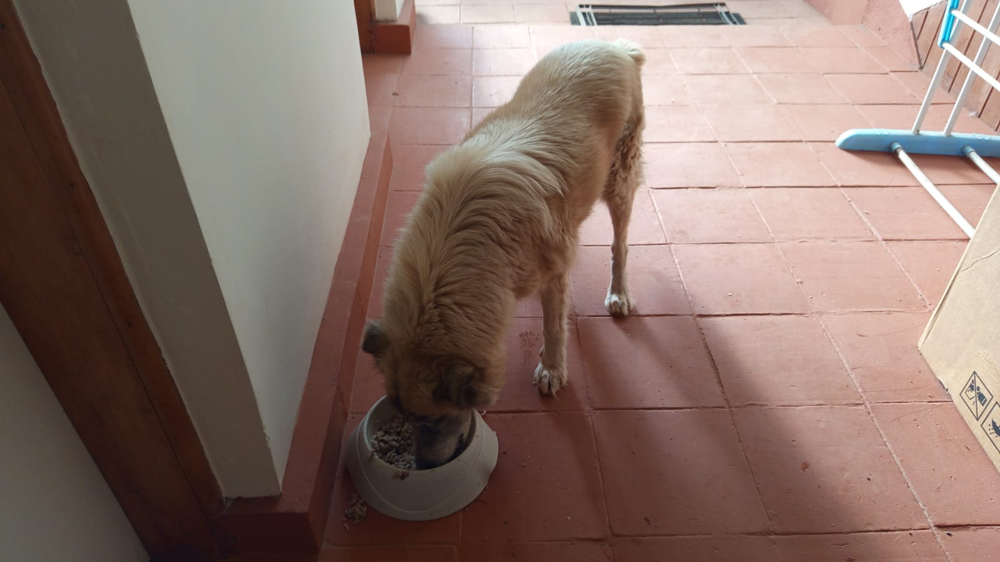

Mucheru World of Golf
Field operations at Mucheru World of Golf on Friday, 25th September 2026 delivered extensive progress across heavy equipment earthmoving, putting green agronomic foundations, material deliveries, perimeter drainage installation, and water hazard preparations:
- Green 1 Full Riversand Application Milestone: Clean, coarse riversand was hauled, placed, and spread across the entire surface of Green 1, achieving 100% full coverage over the compacted volcanic pumice sub-base ready for final laser leveling.
- Green 7 Hardcore Rock Base Completion & PVC Drainage Delivery: The manual site crew completed placing, interlocking, and sledgehammer-fracturing hardcore rocks across the foundation bed of Green 7. Concurrently, a consignment of PVC drainage pipes was delivered on site for upcoming subgrade drainage installation.
- Teebox Reshaping (Tees 17 & 13): The Backhoe Loader executed full platform reshaping on Teebox 17 and Teebox 13, precision cutting, leveling, and profiling launch elevations and shoulder slopes to align with their respective playing corridors.
- Barrier Contouring & Earthmoving (Tee 16 / Green 16 & Green 18): The Backhoe Loader worked on the earthen boundary barrier between Tee 16 and Green 16 to reinforce safety separation. At Green 18, the machine removed an adjacent barrier and relocated the soil onto the nearby soil stockpile, re-sculpting and designing the contoured hill mound.
- Palm Tree Hole Excavation: The XGMA Backhoe Loader excavated a deep planting pit along the course perimeter for incoming palm tree installation.
- Material Deliveries (Riversand & PVC Pipes): Received 2 tipper lorry loads of clean riversand (1 in the morning and 1 in the evening) for green top-dressing stockpiles, alongside delivery of PVC drainage pipes for Green 7.
- Farm Tractor Logistics & Aggregate Consolidation: The farm tractor hauled coils of main drainage pipes from Chaka Farms to the golf site, gathered and transported surplus ballast stone scattered across multiple course sections to a centralized staging location, and hauled excess manure to Mwangi's land along the perimeter fence from Teebox 15 for hedge planting.
- Perimeter Main Drainage Installation: Heavy-duty main HDPE drainage pipes were laid directly into the excavated perimeter trenches running from Teebox 15 toward Mwangi's place to establish stormwater management.
- Greens 17 & 13 Red Soil Apron Leveling: Additional red loam topsoil was added to the apron surrounds of Green 17 and Green 13, and the crew manually raked and leveled the surfaces to establish smooth approach contours.
- Dams 1, 2 & 3 Basin Cleanup & Water Compaction: Site workers thoroughly cleaned out rock debris and loose soil from the floors and embankments of all three course reservoirs (Dam 1, Dam 2, and Dam 3), followed by water hose spraying to compact the subgrade ahead of dam liner installation.
- Gate A Re-Erection & Alignment: Gate A had developed a slant and was touching the ground following its repositioning inward; it was re-erected, adjusted, and securely aligned plumb today.
- Daily Field Video Documentation: Comprehensive daily progress video documenting Green 1 riversand, teebox reshaping, barrier works, and dam preparations was published to YouTube (Watch on YouTube).
Golf Course Milestone Summary
Key highlights today include 100% full riversand spreading on Green 1, completed hardcore rock foundation packing on Green 7 with PVC drainage pipes received, precision reshaping of Teeboxes 17 and 13, perimeter main drainage pipe placement from Teebox 15 to Mwangi's place, and subgrade floor preparation across Dams 1, 2, and 3.
Consolidated machine hours and operational billing for Friday, 25th September 2026. Per project domain rules, all backhoe and frontloader operations are consolidated under a single Backhoe Loader entry:
| Equipment Description | Hours Logged | Rate (KES / Hr) | Total Cost (KES) | Key Tasks Executed |
|---|---|---|---|---|
| Backhoe Loader (Consolidated) | 8.50 hrs (8h 30m) | 6,500.00 | 55,250.00 | Reshaping Teeboxes 17 & 13; contouring barrier between Tee 16 and Green 16; moving Green 18 barrier soil onto hill mound & designing soil hill; digging 1 palm tree hole; loading aggregates. |
| Farm Tractor & Trailer | Full Shift | Internal Farm Asset | — | Hauling drainage pipes from Chaka Farms to golf site; moving excess ballast stones to designated location; hauling manure from site to Mwangi's land along Teebox 15 fence line. |
| Total Operational Cost | 8.50 Machine Hrs | KES 55,250.00 | Active Site Equipment | |
Heavy Equipment Performance Summary
The Backhoe Loader operated at peak performance across 8 hours 30 minutes, executing dual teebox platform reshaping (Tees 17 and 13), strategic boundary barrier contouring (Tee 16/Green 16), complex earthmoving at Green 18 to contour the hill mound, and precision excavation of palm tree planting pits.
Logistics and material inventory received and distributed across construction zones at Mucheru World of Golf on Friday, 25th September 2026:
| Material Type | Quantity Received | Source / Supplier | Placement / Application Zone |
|---|---|---|---|
| Clean Riversand | 2 Tipper Lorries (1 Morning, 1 Evening) | Commercial Supply Delivery | Central site stockpile • Applied fully across Green 1 foundation bed |
| PVC Drainage Pipes | Consignment Batch | Plumbing Supplier Delivery | Staged at Green 7 for subgrade herringbone drainage line installation |
| Main HDPE Drainage Pipes | Multiple Coils | Transferred from Chaka Farms | Installed in perimeter trench from Teebox 15 to Mwangi's residence |
| Organic Farmyard Manure | Tractor Trailer Loads | Golf Site & Greenhouse Stockpiles | Distributed along fence line from Teebox 15 to Mwangi's place for hedges |
| Ballast Stones | Internal Consolidation | Multiple Golf Site Sections | Excess stones gathered and centralized at designated material depot |
| Red Loam Soil | Internal Borrow Pit Loads | Internal Stockpiles | Backfilling and leveling apron surrounds on Green 17 and Green 13 |
Comprehensive ground video capturing Friday, 25th September operations: full coverage of clean riversand application on Green 1, laborers placing and sledgehammer-breaking hardcore base rocks on Green 7, Backhoe Loader reshaping platforms on Teeboxes 17 and 13 and contouring the soil hill near Green 18, pipe placement along the Teebox 15 perimeter trench, and site crew preparing Dam 1, 2, and 3 floors for liner installation.
Comprehensive 18-hole putting green status ledger tracking foundation bases, pumice compaction, riversand spreading, contouring, and drainage connections. Highlighting incremental updates on September 25, 2026:
| Green | Current Technical & Agronomic State | Milestone Status |
|---|---|---|
| Green 1 Today | Clean riversand hauled and 100% fully applied across entire foundation bed over compacted volcanic pumice sub-base ready for final leveling (Sep 25); riversand applied halfway (Sep 24); pumice mechanically compacted (Sep 19); red loam spread; drainage trenched. | Riversand Fully Applied |
| Green 2 | Clean riversand applied and spread across the entire green bed over compacted volcanic pumice sub-base (Sep 23); red loam collar shaped; subgrade drainage trenched. | Riversand Applied |
| Green 3 | Clean riversand hauled and actively applied across green foundation surface ready for leveling (Sep 22); volcanic pumice stone sub-base compacted (Sep 19); subgrade drainage trenched. | Riversand Applied |
| Green 4 | Surrounding soil around Green 4 leveled to ground level using Backhoe Loader (Sep 24); clean riversand spread across contoured bean-shaped complex (Sep 22); pumice compacted; drainage trenched. | Surrounds Leveled |
| Green 5 | Subgrade drainage trenching line now fully connected into Dam 2 outfall (Sep 21); ready; fully established mature championship putting green turfgrass under active sprinkler irrigation. | Turf Ready • Drainage Tied |
| Green 6 | Farm tractor dumped red soil across palm tree planting line reaching Green 6 (Sep 24); palm planting advanced to Green 6 (Sep 23); raised soil barrier berm pushed back (Sep 21); drainage cut. | Palms Reached Green 6 |
| Green 7 Today | Hardcore rock infill and sledgehammer fracturing 100% completed across entire foundation bed; consignment of PVC drainage pipes delivered on site ready for drainage installation (Sep 25); subgrade drainage trenched. | Hardcore Base Complete • PVC In |
| Green 8 | Riversand applied earlier remains unleveled; clean riversand delivery received on site stockpile (Sep 20); red volcanic loam spread; subgrade drainage trenches excavated (Sep 15). | Riversand Unleveled |
| Green 9 | Clean riversand application completed across the entire green surface ready for final leveling (Sep 23); volcanic pumice graded and compacted; subgrade drainage trenched. | Riversand Applied |
| Green 10 | Stockpiled soil hill near Green 10 cut into and reshaped using Backhoe Loader (Sep 24); design finishing touches completed (Sep 21); volcanic pumice sub-base compacted with roller (Sep 20); drainage cut. | Soil Reshaped • Compacted |
| Green 11 | Volcanic pumice sub-base compacted with vibratory roller compactor; Joe's crew filled unlevelled low spots with pumice during compaction (Sep 20); hardcore stabilized; membrane placed; drainage cut. | Pumice Compacted |
| Green 12 | Volcanic pumice sub-base compacted with vibratory roller compactor; Joe's crew filled unlevelled low spots with pumice during compaction (Sep 20); hardcore packed; membrane placed; drainage cut. | Pumice Compacted |
| Green 13 Today | Red soil apron surrounds precision leveled and graded by site crew following additional red loam filling (Sep 25); protective boundary barrier sculpted with Green 17 (Sep 21); volcanic pumice sub-base compacted (Sep 20); drainage cut. | Apron Leveled • Pumice Compacted |
| Green 14 | Earthen barrier berm raised and reshaped along green boundary using Backhoe Loader (Sep 23); boundary berm sculpted with Green 16 (Sep 22); volcanic pumice sub-base compacted (Sep 20); drainage trenched. | Barrier Berm Raised |
| Green 15 | Boundary with Green 10 reshaped; volcanic pumice compacted with vibratory roller, with Joe's crew backfilling unlevelled depressions with pumice (Sep 20); outfall drainage connected to Dam 1 (Sep 17); membrane placed. | Boundary Reshaped • Compacted |
| Green 16 Today | Protective earthen barrier berm between Tee 16 and Green 16 reworked, graded, and reinforced using Backhoe Loader (Sep 25); volcanic pumice sub-base compacted (Sep 20); hardcore foundation bed packed; membrane installed; drainage cut. | Tee-Green Barrier Reworked |
| Green 17 Today | Red soil apron surrounds precision leveled and graded by site crew following additional red loam filling (Sep 25); protective barrier berm reshaped (Sep 25); volcanic pumice sub-base compacted (Sep 20); membrane installed. | Apron Leveled • Berm Reshaped |
| Green 18 Today | Backhoe moved adjacent protective barrier and dumped soil onto nearby hill, artistically designing and reshaping the contoured mound (Sep 25); design finishing touches (Sep 21); volcanic pumice compacted (Sep 20); drainage cut. | Mound Reshaped • Compacted |
Comprehensive 18-hole championship teebox platform audit tracking earthwork leveling, structural embankments, and playing corridor alignments. Preserved day-to-day continuity as of September 25, 2026:
| Teebox | Current Technical & Earthwork State | Platform Status |
|---|---|---|
| Tee 1 | Championship launch platform completely reshaped, cut, and graded to design elevation using Backhoe Loader (Sep 24); mass murram fill leveled and compacted. | Platform Reshaped |
| Tee 2 | Playing launch platform completely reshaped, contoured, and graded using Backhoe Loader (Sep 24); foundation fill dumped and leveled. | Platform Reshaped |
| Tee 3 | Playing launch platform completely reshaped, contoured, and graded using Backhoe Loader (Sep 24); foundation fill leveled. | Platform Reshaped |
| Tee 4 | Championship launch platform completely reshaped, cut, and graded using Backhoe Loader (Sep 23); surface contour leveled to design elevation and aligned to fairway corridor. | Platform Reshaped |
| Tee 5 | Launch platform completely reshaped, cut, and graded using Backhoe Loader (Sep 22); elevated platform aligned to fairway corridor; palm trees planted along adjacent boundary line. | Platform Reshaped |
| Tee 6 | Precision leveling and compaction completed along the boundary tree corridor. | Platform Leveled |
| Tee 7 | Dual launch platforms completely reshaped and precision contour-leveled using XGMA backhoe loader (Sep 20); elevated plateaus reinforced and perimeter protective earth berms sculpted along fence line. | Dual Platforms Reshaped |
| Tee 8 | Graded, leveled, and contour-adjusted to match fairway transitions and surrounds. | Contour Adjusted |
| Tee 9 | Playing platform leveled and surrounding perimeter ground graded (Sep 1). | Platform Leveled |
| Tee 10 | Graded and compacted platform serving the start of the back-nine playing corridor. | Platform Compacted |
| Tee 11 | Rough shaping, elevation grading, and Backhoe subsoil leveling completed (Sep 7). | Shaped & Graded |
| Tee 12 | Dual platforms established: primary championship tee resized; new forward Ladies' Tee platform constructed (Sep 5). | Dual Platforms Complete |
| Tee 13 Today | Playing platform completely reshaped, contour-cut, and precision leveled to design elevations using Backhoe Loader (Sep 25); fairway shoulder transitions smoothed. | Platform Reshaped |
| Tee 14 | Playing platform reshaped, elevation precision-leveled, and protective boundary embankment reinforced (Sep 16). | Reshaped & Leveled |
| Tee 15 | Playing platform completely shaped and contour-leveled with backhoe loader (Sep 19); primary irrigation tie-in zone established; main HDPE waterline laid along boundary trench (Sep 15). | Shaped & Leveled |
| Tee 16 Today | Protective earthen boundary barrier between Tee 16 and Green 16 reshaped, graded, and reinforced using Backhoe Loader (Sep 25); platform reshaped and precision-leveled (Sep 20). | Barrier Berm Reworked |
| Tee 17 Today | Championship launch platform completely reshaped, contour-cut, and precision-graded to design elevation using Backhoe Loader (Sep 25); adjacent boundary berm reshaped (Sep 25). | Platform Reshaped |
| Tee 18 | Championship tee platform leveled; perimeter approach cleared and graded (Sep 1). | Platform Leveled |
Operations Synthesis • Course Progress Rates
Greens Status (18 Holes): 1 green (Green 5) has established turfgrass under active sprinkler irrigation with drainage tied to Dam 2. 6 greens (Greens 1, 2, 3, 4, 8, 9) have clean riversand applied, with Green 1 reaching 100% full coverage today. 10 greens (Greens 10 – 18, and Green 1) have completed compacted volcanic pumice sub-bases. Green 7 completed hardcore rock base placement and breaking today, with PVC pipes delivered on site. Red soil aprons on Greens 13 and 17 were precision leveled.
Teebox Status (18 Holes): 12 playing platforms (Tees 1, 2, 3, 4, 5, 7, 12, 13, 14, 15, 16, 17) are fully reshaped and precision graded, with Tees 17 and 13 completed today and Tee 16 barrier contoured. The remaining 6 platforms (Tees 6, 8, 9, 10, 11, 18) are rough-leveled and compacted in bulk earthworks.
Comprehensive sequential field photography documenting riversand spreading, hardcore rock fracturing, teebox and barrier earthmoving, drainage installation, and dam floor preparations:

Material Delivery — Riversand Tipper Lorry
Commercial tipper lorry delivering clean coarse riversand to central site stockpiles for green top-dressing.

Material Staging — Riversand Stockpile
Clean riversand stockpiled on site ready for distribution across putting green foundation beds.

Green 1 Construction — Riversand Infill & Spreading
Field crew wheelbarrowing and shoveling clean riversand over the volcanic pumice base of Green 1.

Green 1 Milestone — 100% Riversand Coverage
Championship putting green foundation bed fully covered with uniform depth of clean riversand ready for final leveling.

Green 7 Foundation — Hardcore Rock Packing
Field crew manually placing and arranging dense hardcore quarry stones into the Green 7 subgrade bed.

Green 7 Construction — Sledgehammer Hardcore Fracturing
Laborers using sledgehammers to crush and fracture large hardcore rocks to form a tight, interlocked foundation layer.

Teebox Reshaping — Platform Cut & Grade
Backhoe Loader sculpted playing platform with clean batter slopes, leveled surface, and defined tee shoulders.

Green 17 & Teebox 17 — Protective Berm Reshaping
Backhoe Loader re-profiling the earthen boundary berm and safety barrier adjacent to Green 17 and Teebox 17.

Boundary Berm Contour — Crest Leveling & Compaction
Reshaped earthen barrier berm with a leveled, flat crest running along the course playing boundary.

Earthmoving Operations — Front Bucket Berm Sculpting
Backhoe Loader utilizing its front loader bucket to push fill, shape embankment batters, and grade the barrier ridge.

Greens 13 & 17 Aprons — Red Soil Infill & Spreading
Manual crew spreading freshly added red loam soil across the green apron transition zone.

Apron Precision Leveling — Surrounds Contouring
Workers fine-grading and raking red topsoil across the green apron perimeter to ensure smooth drainage transitions.

Tree Planting Logistics — Backhoe Palm Hole Excavation
XGMA XG765N Backhoe excavator arm digging deep planting pit for palm tree installation along the fairway boundary.

Excavated Palm Pit — Deep Planting Preparation
Completed deep palm tree planting hole excavated into compacted soil ready for rootball placement and red soil backfill.

Infrastructure Logistics — Farm Tractor Pipe Haulage
Red farm tractor trailer transporting coils of heavy-duty HDPE main drainage pipes from Chaka Farms to the golf course.

Perimeter Drainage — Main HDPE Pipe Installation
Main drainage pipe laid directly inside the continuous perimeter boundary trench running from Teebox 15 toward Mwangi's land.

Site Cleanup & Aggregates — Ballast Consolidation
Field crew shoveling surplus ballast stone scattered across playing areas into the tractor trailer for central staging.

Dam 1 Basin Preparation — Subgrade Floor Clearance
Site workers raking, picking stones, and smoothing the floor and batters of Dam 1 in preparation for impermeable liner installation.

Course Water Hazards — Multi-Dam Floor Sanitation
Comprehensive manual clearance and grading underway across the basins of Dams 1, 2, and 3 ahead of geosynthetic lining.

Dam Subgrade Stabilization — Water Hose Compaction
Worker moistening the excavated dam embankment with a water hose to optimize subgrade moisture and achieve tight compaction.
Chaka Farms
Operations conducted at Chaka Farms on Friday, 25th September 2026 encompassed dairy milking, veterinary flock deworming, working dog unit training and socialization, farmyard manure distribution, and intensive land digging in preparation for maize planting:
- Dairy Milking Yield & Allocation: Total gross dairy cow milk yield recorded 4.0 Litres (2.0L morning, 2.0L evening). Formal disbursements drawn out of total yield included 1.0L for goat kids (0.5L morning and 0.5L evening), 0.5L allocated to Gladys, and 0.5L allocated to Maasai, resulting in a net farm balance of 2.0 Litres.
- Flock Syringe Deworming & Veterinary Intervention: All goats and sheep on the farm underwent comprehensive deworming administered individually by syringe. In addition, a veterinarian attended to a sick goat, providing targeted diagnosis and clinical treatment.
- Canine Unit Care, Socialization & Training (Willy): Willy observed kennel manners and maintained thorough kennel stall sanitation. Dogs Logan, Bella, and Mali participated in morning socialization alongside grazing goats, fostering calm coexistence. Obedience command training included successful execution of "paw" and "spin" routines.
- General Compound Upkeep (Margaret & Monica): Margaret and Monica performed compound cleanliness routines, sweeping farm corridors and clearing debris.
- Farm Plot Digging & Manure Incorporation (Dennis & Farm Crew): Intensive land tilling and manual digging were executed across the farm agricultural plot in readiness for planting maize. Seasoned farmyard manure was distributed and worked into the soil. The dedicated field crew comprised Margaret, Monica, Mwangi, Kimondo, and Kamandau, supervised for reporting by Dennis.
- Gate A Re-Erection & Tractor Manure Logistics (Ken): Gate A, which had started slanting and touching the ground after being moved to the inner side, was re-erected, aligned, and securely plumbed. The farm tractor was deployed to haul manure from the greenhouse to the farm fields.
Chaka Farms Operations Summary
Syringe deworming completed across all goats and sheep, veterinary care administered to the sick goat, maize planting plot thoroughly dug and manured by the joint farm crew, Gate A restored to plumb alignment, and kennel socialization smoothly executed.
Quantitative breakdown of gross dairy production, scheduled nutrition disbursements, and net farm inventory for Friday, 25th September 2026:
| Production / Allocation Category | Morning Session | Evening Session | Daily Total | Accounting Impact |
|---|---|---|---|---|
| Gross Dairy Cow Milk Production | 2.0 L | 2.0 L | 4.0 L | Gross Inflow (Total Harvested) |
| Goat Kids Milk Ration | 0.5 L | 0.5 L | - 1.0 L | Disbursement (Nutrition Ration) |
| Gladys Allocation | — | — | - 0.5 L | Disbursement (Staff Allocation) |
| Maasai Allocation | — | — | - 0.5 L | Disbursement (Staff Allocation) |
| Total Allocations & Disbursements Deducted | - 2.0 L | Total Outflow | ||
| Net Remaining Farm Reserve Balance | 2.0 L | Net Farm Inventory | ||
📌 Dairy Ledger Reconciliation Note
In strict compliance with farm accounting standards, all milk yields are recorded in Litres (L). Rations and staff disbursements (2.0L total) are deducted directly from the gross harvest (4.0L), yielding an exact net farm reserve balance of 2.0 Litres.
Veterinary Healthcare & Deworming Milestone
The entire smallstock flock (100% of goats and sheep) received prophylactic anthelmintic deworming via oral syringe. The veterinary doctor examined and treated a sick goat on site, stabilizing its condition.
Field photography documenting infrastructure maintenance, organic manure haulage, and agricultural land preparation for maize planting at Chaka Farms:

Gate A Re-Erection — Perimeter Realignment
Chaka Farms Gate A dismantled, re-erected, and welded plumb after slanting and scraping the ground following its repositioning inward.

Organic Fertilizer Haulage — Tractor Manure Tipping
Farm tractor tipping a full trailer load of seasoned farmyard manure along the fence line and agricultural plots for maize cultivation.

Agricultural Land Preparation — Manual Plot Digging
Combined farm crew actively digging and turning over soil in the agricultural plot using handheld shovels and hoes to prepare uniform seedbeds for maize planting.

Agricultural Land Preparation — Tilling & Soil Aeration
Farm laborers tilling the cultivation plot to break soil clods and ensure thorough soil aeration ahead of organic manure incorporation and maize seeding.
Kabete Residence
Field operations and estate maintenance were conducted at Kabete Residence on Friday, 25th September 2026, with daily progress overseen and shared by Njoki:
- Starter Column Bending Milestone: Steel fixers completed cutting, bending, and assembling 100% of the steel reinforcement starter column cages, organizing them on site ready for structural installation.
- Starter Column In-Situ Placement at Outdoor Fireplace: Workers positioned starter column rebar cages inside the deep excavated outdoor fireplace pit, setting them directly on the foundation raft reinforcement grid, verifying dimensions and center-to-center spacing with measuring tapes.
- Steel Reinforcement Delivery & Off-Loading: A consignment of high-tensile steel reinforcement bars arrived via pickup truck and was safely off-loaded and organized in the construction staging area.
- Display Stands Varnishing Completed: Carpentry restoration on wooden plant display stands was completed, with fine sanding followed by rich, protective gloss wood varnish applied to all surfaces.
- Dog Kennel Roof Tile Painting Completed: Property maintenance completed the application of weather-resistant red oxide paint across the terracotta roof tiles of the domestic dog kennel facility.
- Master Bedroom Window Hardware Installation: A new solid brass multi-hole casement window stay fastener was installed on the master bedroom window, ensuring secure locking and adjustable ventilation.
- Domestic Pet Care Routines: Ajabu the Golden Retriever was taken for an outdoor leash walk and fed on the veranda; resident feline companions Reo, Mocha, and Aiko were fed together side by side.
Kabete Milestone Summary
Starter column reinforcement bending is 100% complete, column cages were positioned and tied in the fireplace pit, display stand varnishing and dog kennel roof tile painting are fully complete, and window hardware was installed in the master bedroom.
Comprehensive sequential field photography documenting structural rebar fabrication, starter column footing installation, wood finishing, facility painting, and domestic pet care:

Structural Material Delivery — Rebar Off-Loading
Steel reinforcement bars off-loaded from pickup truck at Kabete Residence for foundation and column cage assembly.

Civil Engineering Milestone — Starter Column Cages
Stack of completed, bent, and assembled steel reinforcement starter column cages ready for structural installation.

Structural Rebar Fabrication — Completed Column Bends
Close-up view of precision-bent starter column rebar cages tied with structural stirrup links.

Fireplace Substructure — Column Placement
Civil crew positioning steel starter column bars onto the bottom footing rebar mesh inside the excavated pit.

Reinforcement Alignment — Column Framing
Steel fixers aligning vertical reinforcement bars and verifying cage squareness in the foundation pit.

Fireplace Pit — Column Plumb & Spacing Check
Workers using a tape measure to verify precise cover and center-to-center spacing of starter column bars.

Foundation Footing Rebar — Structural Integration
Starter column bars securely wired to the foundation raft rebar grid inside the deep fireplace excavation.

Starter Column Grid — In-Situ Assembly
Detailed overhead view of the assembled column rebar cage seated on the foundation reinforcement mat.

Timber Restoration — Plant Stand Varnishing
Custom wooden plant stands undergoing fine sanding and application of high-gloss protective varnish.

Wood Finishing Milestone — Completed Varnished Stands
Finished timber plant display stands drying outdoors, showcasing smooth, lustrous, weather-resistant polyurethane coating.

Kennel Facility Maintenance — Roof Tile Painting
Painter in protective overalls applying red oxide protective coating to the terracotta roof tiles of the dog kennel.

Kennel Roof Milestone — 100% Paint Finish
Completed dog kennel roof displaying a fresh, weatherproof, vibrant terracotta red paint coat.

Architectural Hardware — Window Fastener Fitting
Solid brass multi-position casement stay fastener newly installed on the master bedroom window casement.

Domestic Pet Care — Ajabu Leash Walking
Ajabu the Golden Retriever enjoying a structured outdoor leash walk along the paved residence driveway.

Domestic Pet Care — Ajabu Relaxation
Ajabu resting peacefully on the shaded residential veranda during afternoon pet care routines.

Domestic Pet Care — Reo, Mocha & Aiko Feeding
Resident feline companions Reo, Mocha, and Aiko gathered and eating calmly together side by side.
Rose Park Apartment
Specialized renovation and wall remediation operations commenced at Rose Park Apartment on Friday, 25th September 2026 to resolve wall flaking and moisture degradation:
- Wall Peeling Inspection: Technicians conducted a thorough inspection of interior surfaces, identifying areas where paint and plaster had debonded and peeled away due to moisture entrapment, particularly along lower skirtings and laundry room partition walls.
- Loose Flake Scraping & Surface Stripping: Maintenance crews systematically scraped away loose, brittle, and blistering paint flakes across multiple apartment rooms using putty knives and wire brushes.
- Floor Protection & Waste Management: Protective heavy-duty sheeting was laid across timber and tiled floors to catch loose plaster flakes, maintaining clean living spaces during heavy scraping.
- Preparation for Skim Coating: Walls were stripped back to sound, solid plaster to allow thorough drying before applying moisture-resistant primer, skimming filler, and final topcoats.
Remediation Milestone Summary
Loose and defective paint flakes were thoroughly scraped across targeted rooms at Rose Park Apartment, establishing clean, sound wall substrates in readiness for plaster patching, undercoat application, and full repaint.
Sequential field photography documenting wall inspection, paint degradation assessment, and manual plaster scraping operations:

Damage Assessment — Plaster & Paint Peeling
Inspection revealing extensive moisture damage, efflorescence, and peeling paint layers near baseboard skirting.

Laundry Room Remediation — Loose Paint Removal
Technician in high-visibility safety wear scraping away deteriorated, flaking paint from the laundry room partition wall.

Wall Surface Preparation — Putty Knife Scraping
Manual scraping of loose wall flakes to strip decayed paint layers back to a sound, solid plaster substratum.

Corner Detail Stripping — Flake Removal
Carefully scraping flaky paint away from interior wall junctions and window reveals.

Plaster Scraping — Debris Clearance
Stripping defective topcoats and sweeping loose debris onto protective floor sheeting.

Active Surface Prep — Scraping Operation
Technician systematically working across the living room wall removing bubble blisters and unstable coatings.

Floor Protection & Window Reveal Stripping
Worker stripping flaky plaster adjacent to the window with heavy-duty drop cloths protecting timber flooring.

Plaster Remediation — Perimeter Wall Scraping
Technician removing peeling latex paint along the lower wall course to expose sound substrate.

Wall Flake Clearance — Substrate Ready for Undercoat
Cleaned wall section with loose flakes removed, prepared for skim coating, sanding, and primer application.
Amani Cottage
Comprehensive property housekeeping and grounds care routines were executed at Amani Cottage on Friday, 25th September 2026:
- Balcony Sweeping & Washing: Thorough manual sweeping followed by wet scrubbing and washing was completed across two exterior balconies, eliminating accumulated dust and maintaining pristine outdoor surfaces.
- Multi-Level Interior Deep Cleaning: Comprehensive interior housekeeping was executed across upstairs and downstairs living areas, including detailed furniture dusting, surface wiping, and floor cleaning.
- Furniture Sunning & Natural Airing: Furniture pieces from both the dining room and downstairs sitting room were moved outdoors into the direct sunlight to air out and freshen before being returned inside and arranged appropriately.
- Irrigation Schedule Notice: Grounds sprinkler irrigation remains suspended until further operational notice.
Housekeeping Operations Summary
Both balconies were washed down, upper and lower levels thoroughly dusted and sanitized, and living and dining room furniture refreshed in natural sunlight before organized re-arrangement.